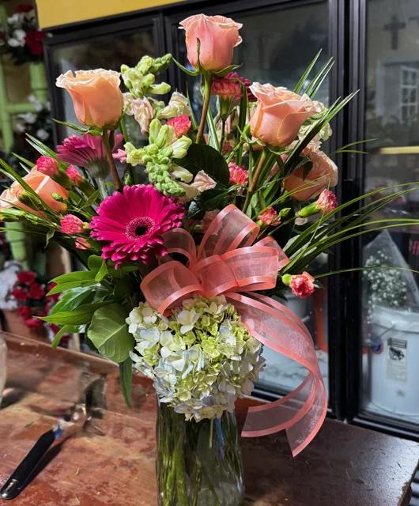
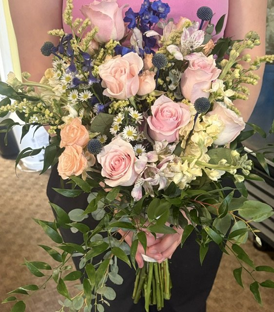
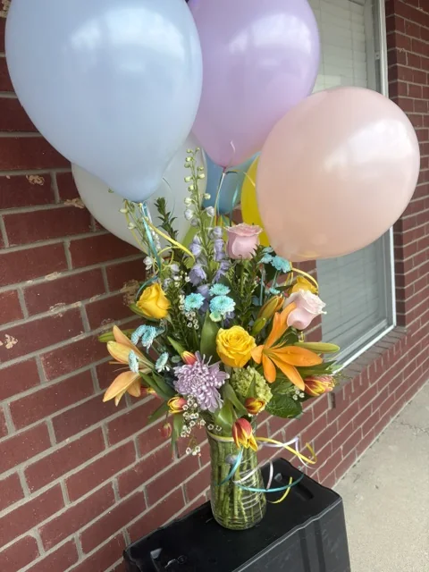
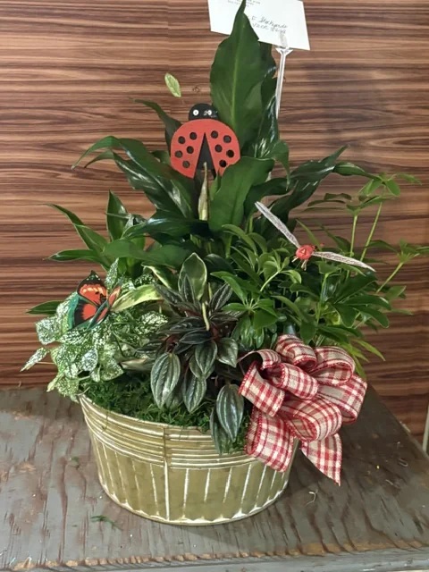

Our Services
From an everyday bouquet to the hardest goodbye, our team helps make the next step clear, personal, and manageable.

Local service
Delivery within 35 miles of Canton
We hand-deliver to homes, workplaces, schools, hospitals, care communities, churches, funeral homes, and cemeteries.
- Same-day cutoff: 2:30 PM Monday–Friday and 10 AM Saturday, subject to flower and route availability.
- Delivery fees: $5 in Canton city limits, $10 just outside Canton, and $15 farther out within 35 miles. No minimum flower purchase for delivery.
- Regular service includes Mabank, Wills Point, Van, Grand Saline, Martins Mill, and Ben Wheeler when the address falls within 35 miles.
- You may request a specific time; the shop will confirm whether it can be met.
- If no one answers, we try to contact the customer or recipient and leave the order safely when conditions allow.
- Delivery or placement photos are available by request.
Flowers Etc. does not add special facility restrictions, but each facility may have its own delivery rules. We confirm the recipient and facility details before delivery.

Steady guidance when it matters
Funeral & Sympathy
We create personal casket sprays, easels (standing sprays), wreaths, hearts, crosses, sympathy arrangements, plants, and keepsakes—and coordinate the delivery details carefully.
A simple way to choose
- For the family's home: a vase arrangement, basket, or plant is a thoughtful choice before or after the service.
- For the funeral or memorial service: easels, wreaths, hearts, crosses, and larger sympathy pieces are designed for display at the service.
- For the casket: the casket spray is normally selected by the immediate family or the person coordinating the service.
- For the cemetery: fresh or lasting silk flowers can be discussed separately based on the placement and timing needed.
These are common starting points, not strict rules. Call or text and our team will help you choose something appropriate for the family, service, and budget.
- Place funeral orders at least 24 hours ahead.
- We plan for delivery at least one hour before the funeral.
- Shorter-notice exceptions may be possible depending on the design, size, and flower availability. Call to confirm honestly what can be done.
- We deliver to area funeral homes and can work from the service information you provide.

Care from near or far
Custom Cemetery Flowers
Lasting custom silk cemetery flowers are $50 each and are sprayed with a weather protectant for Texas conditions. Choose your flowers, colors, and style—from a standard cemetery arrangement to a headstone saddle. Photos are examples of previous variations.
- Scheduled placement is available at cemeteries within our regular 35-mile delivery area.
- You choose the requested placement frequency and schedule.
- No additional delivery or placement fee is added to the $50 arrangement price.
- If an earlier arrangement needs to be cleared for the scheduled placement, our team will handle it when necessary.
- Photo confirmation is available by request.
- Please provide the cemetery name and grave-location details.
- A member of our team confirms the available date and placement details before the schedule begins.
If you notice that flowers have been removed or damaged after placement, please call and let us know. We’ll talk through what happened and help determine the best available next step. Automatic replacement is not included.
Choose Custom Cemetery Flowers
Designed around your day
Weddings
Bridal and attendant bouquets, boutonnieres, corsages, and ceremony or reception flowers are designed around your colors, season, priorities, and budget.
- Please place wedding orders at least one month ahead when possible.
- A 50% deposit is required up front.
- The remaining balance is due two weeks before the wedding date.
- Call to discuss consultation details, availability, and the scope of delivery or setup.

Gatherings big and small
Celebrations & Event Flowers
Flowers Etc. can help with birthdays, quinceañeras, corporate events, private parties, baby and bridal showers, and holiday or milestone celebrations.
- Event work is custom and subject to the date, design scope, staffing, and flower availability.
- Call before making plans around shop availability.
- Bring colors, inspiration photos, quantity needs, venue details, and a working budget if you have them.

Made for the person and the moment
Custom Fresh, Silk, Plants & Gifts
Tell us the occasion, the feeling, and your budget. We can design with the freshest flowers on hand or help choose something lasting.
- Custom fresh arrangements designed around the occasion, color direction, and budget.
- Silk flowers for home, memorial, cemetery, and keepsake use.
- Plants and dish gardens.
- Gift baskets, memorial keepsakes, wind chimes, crosses, stuffed animals, and rotating shop gifts.
- Prom and homecoming corsages and boutonnieres, coordinated from a dress or color photo.
- Seasonal and holiday designs, subject to availability.
An easy finishing touch
Balloons & Inflation
- Shop-provided latex balloons with helium: $2 each.
- Inflation for customer-provided latex balloons: $1 each.
- Shop-provided Mylar balloons with helium: $5 each.
- Inflation for customer-provided Mylar balloons: $2 each.
Call to confirm balloon colors, messages, quantity, and current availability.
Frequently Asked Questions
Can I get flowers delivered today?
Same-day delivery may be available for orders placed by 2:30 PM Monday–Friday or 10 AM Saturday, subject to flower and route availability. Sunday is closed; funeral delivery may be available by arrangement.
What if a flower in the photo is unavailable?
Flowers and colors depend on the season and current shop inventory. If the requested date allows, we may be able to source a flower that is not on hand. Otherwise, we substitute a similar bloom of equal or greater value while preserving the design’s style and color direction. A member of our team confirms availability and calls before making a significant change.
Can I request a delivery or placement photo?
Yes. Photo confirmation is available by request, including for cemetery placement. Please ask when ordering so it is noted.
Can you deliver to a hospital, school, funeral home, or care facility?
Yes. Flowers Etc. does not add special restrictions, but the receiving facility may have its own rules. Provide the facility name, recipient details, and any information you have so the shop can confirm delivery.
Can I send an inspiration photo?
Please do. Text Pinterest finds, a past arrangement, the dress, or a color reference to . We use it as direction while working with the flowers available that day.
How do I order and pay?
Add items to the site’s order request, or call, text, email, visit, or message the shop on Facebook. Online payment is not active yet; a member of our team will confirm availability, final details, and payment. Fixed-price online checkout is planned for a later phase, while custom and inventory-dependent requests will remain confirm-first.
Not sure what you need?
Tell us the occasion, your budget, and when it is needed. We’ll help you choose the right next step.